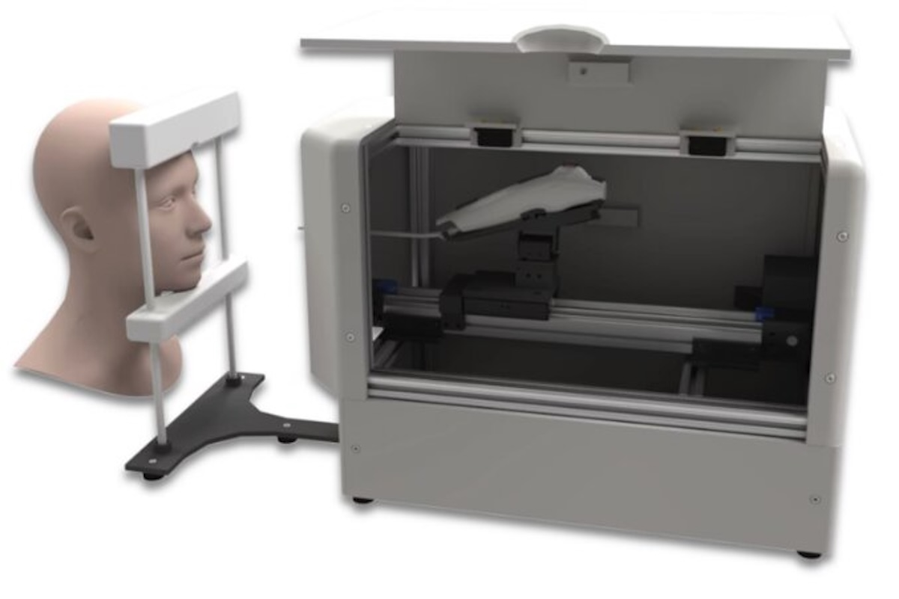
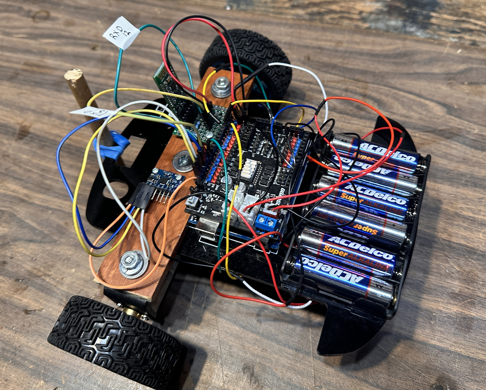

Projects

Robotic laryngoscopy
Dec 2025 - Present
Built and validated a 3-DoF robotic platform for autonomous vocal cord imaging, from concept to cadaveric testing.
View project
SpaceX Starlink antenna structures
Jun 2026 - Sep 2026
Developed structural mechanisms and led qualification testing for Starlink satellite phased-array antennas.
View project
Robotic hand and Opti tactile sensor
Jun 2025 - Dec 2025
Redesigned a 16-servo robotic hand, validated by destructive testing, and built a vision-based tactile sensor.
View project
Baja steering and suspension
Sep 2025 - Present
Designed a custom rack-and-pinion steering system and a data acquisition system for suspension loads and tuning.
View project
Maze robot with closed-loop steering and speed control
Sep 2023 - May 2024
Built, wired, and programmed an Arduino robot that navigates a 3 x 3 m track with obstacles and bonus zones to reach a target zone in a target time. Encoder counts set distance, PID steering on low-pass-filtered gyro readings handled turns of any angle, and closed-loop speed control hit the target time, with Bluetooth telemetry for tuning.
Skills
- Robotics and software
- ROS2, Python, C/C++, MATLAB, PID & closed-loop control, Dynamixel servos, Arduino, Java, Git
- Coursework
- Feedback & Control Systems, Robotic Kinematics, Modeling & Analysis of Dynamical Systems, Mechanisms & Mechanical Systems, Electrical & Electronic Circuits, Advanced Strength of Materials
- Test and analysis
- ATI force/torque sensor, strain gauges, load cells, vision tracking, Instron, Ansys
- Design and build
- NX, SolidWorks, Onshape, Fusion, GD&T, DFMA, CNC, TIG welding, 3D printing, elastomer molding